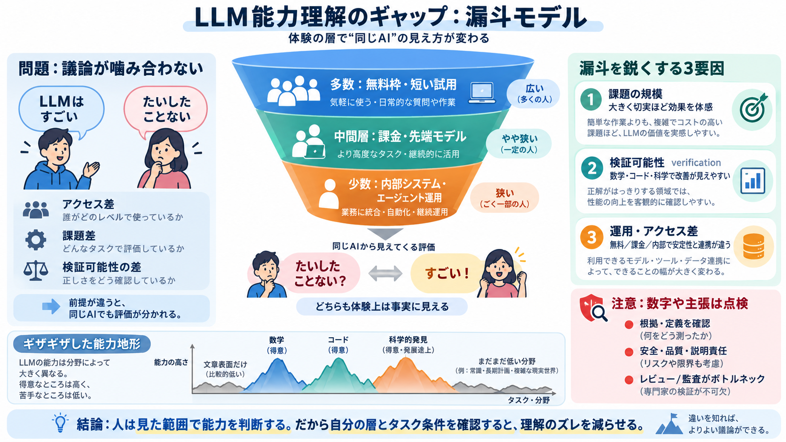

Sequoia Ascent 2026 summary – karpathy
Andrej: Traditional computers automate what you can specify in code. This latest round of LLMs can automate what you can…

Andrej: Traditional computers automate what you can specify in code. This latest round of LLMs can automate what you can…
AI Agents are building a new vertical with LLMs in 2026 and Andrej Karpathy just proved it with his new post... Andrej K…
A lot of people are banking on 2026 as the year AI delivers real business value, not blog posts and social media drafts,…
bio Andrej Karpathy is an AI researcher and educator. He was a founding member of OpenAI and later the Director of AI a…
[33:46] the verifiable rewards were um coding and math. So with math um for example you ask the model to output the fina…